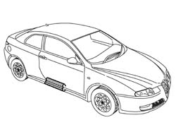
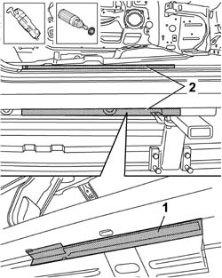
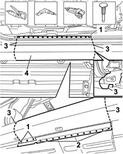
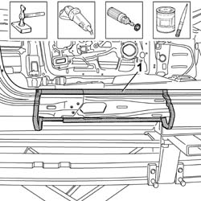
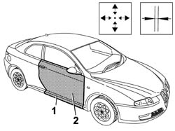
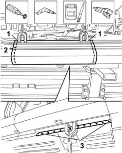
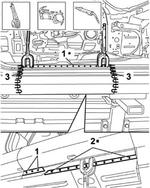
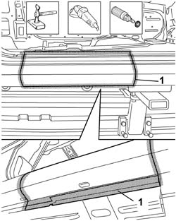
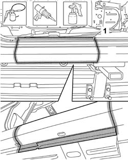

7210E45 PARTIAL DOOR SILL RAIL OUTER TRIM
- Path
- Procedures > 72 PANELS AND FRAME > 7210 REMOVING REFITTING > 7210E EXTERNAL PARTS > 7210E45 PARTIAL DOOR SILL RAIL OUTER TRIM
- Kind
- repair procedure (removal / refitting; the operation number is the code)
- Applies to
- all engines; all production periods
- Interactive page
- https://sloeber94.github.io/elrnDB-aGt/en/#/125002033
Applies to: all engines; all production periods
 Removing
Removing
 Refitting
Refitting- Check that the components connected are not distorted by checking the bodyshell alignment measurements using suitable equipment (gauges, templates or jigs).
- Straighten the body as necessary.

Applies to: all engines; all production periods
- Use the vibrating knife with the special blade to remove the P.V.C. from under the door to highlight the spot welds.
- Use the rotary brush to clean the edges of the panel to highlight the spot welds.

Applies to: all engines; all production periods
1. Use the chamfering machine on the spot welds shown in the diagram.
2. Use the drill with a special bit and chamfer the spot welds shown in the diagram.
3. Use the circular saw following the cutting lines in the diagram.
- Use the hammer and chisel and remove the spot welds milled previously.
4. Remove the underdoor side member outer trim.

Applies to: all engines; all production periods
- Straighten the edges of the underdoor housing using a hammer and dolly block.
- Remove the spot weld residues using a disc grinder.
- Use a rotary brush to clean the areas treated previously.
- Apply electro-galvanizing paint.

Applies to: all engines; all production periods
Refitting
Removing- Position the replacement part in the vehicle and secure it using self-locking clamps.
- Fit the front door.
- Check the alignment and the eveness of the surrounding gap, then remove the door.

Applies to: all engines; all production periods
1. Use the circular saw to cut the edges of the panel so that the join line is perfect.
- Remove the excess offcuts and the replacement part.
2. Remove the anti-corrosion treatment from the entire perimeter of the inside and outside of the replacement part using a rotary brush.
3. Make equidistant holes using the drill along the lower and side edge of the replacement part.
- Apply the electro-weldable paint to the edges in contact with the vehicle.

Applies to: all engines; all production periods
- Position the replacement part and secure it using self-locking clamps.
- Use a spot welder in the areas shown in the diagram.
- Use a MIG welder and weld the openings made previously.
- Use a MIG welder and seam weld as illustrated in the diagram.

Applies to: all engines; all production periods
- Correct any distortions to the panel using a hammer and dolly block.
- Use a disc grinder to level and remove the welding.
- Use a rotary brush to clean the areas welded previously.

Applies to: all engines; all production periods
- Apply anti-oxidant protection to the areas involved in the welding.
- Seal the join lines between the replacement part and the vehicle.
